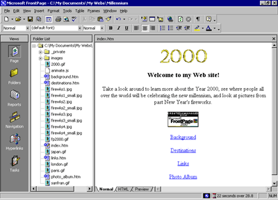

| ||||
In Lesson 1, you learned how easy it is to create Web pages with Microsoft FrontPage and then add them to a new Web site.
In this second lesson, you'll continue working with the Millennium Celebration Web you created by adding navigation bars to its pages, applying and customizing a graphical theme, previewing and testing the Web site, and then preparing the Web site for publication on the World Wide Web.
Before you publish a Web site, you'll want to make sure its pages and files are well organized, all of its hyperlinks are working, pages are free of spelling errors, and you have enough space available on the target Web server. FrontPage can help you complete these important tasks.
If you're continuing this lesson directly from Lesson 1, the Millennium Celebration Web should still be open in FrontPage. If this is the case, skip down to the procedure named "To create hyperlinks to other pages."
If you're continuing this tutorial from a previous session, then you must first open the Web site before you can work with its pages.
To open an existing Web site
FrontPage opens the Web site. The application title bar now reads "Microsoft FrontPage - C:\My Documents\My Webs\Millennium."
Because you'll be working with the pages you've already created, you can close the blank page that opened by default in Page view.
FrontPage closes the current page. Page view is now blank, but the Millennium Celebration Web remains open.
While creating hyperlinks from pictures and text in Lesson 1, you may have noticed that you don't have any connections yet between the pages in your Web site. Even if someone surfed to your current home page, they would have no way of getting to the other pages. In the next section, you'll learn how easy it is to make navigation hyperlinks to other pages.
To create hyperlinks to other pages
You'll keep the Folder List visible while you create hyperlinks to the other pages in your Web site.
The folders and files in the Folder List are shown in alphabetical order. The icon of each file gives you a clue about what kind of file it is.
You will now drag and drop the Background page onto the bottom of the home page. When you do this, FrontPage will create a hyperlink to the Background page on the home page.
FrontPage displays the shortcut mouse pointer while you drag the mouse to indicate that it will not actually insert the Background page, but will create a hyperlink pointing to it.
FrontPage inserts the page title of the Background.htm file ("Background") as the hyperlink text. The blue underlined text shows the presence of the hyperlink.
Your page should now look like this:

While you can manually create hyperlinks to the other pages in your Web site this way, doing so for all pages in a Web site can become a time-consuming and tedious task, especially for larger Web sites. Worse, if you decide to add or remove pages in the current Web site after creating hyperlinks, you'll have to manually add or remove the hyperlinks to them.
FrontPage has a better way to create, manage, and automatically update the navigation hyperlinks that connect your pages together. Before you learn how to do this, let's get rid of the four hyperlinks you just made.
To use the multiple Undo command
The status bar in the Undo history window should read Undo 4 Actions.
FrontPage reverses the last four actions you took, and the four hyperlinks you created are removed from the home page.
Did you find this material useful? Gripes? Compliments? Suggestions for other articles? Write us!
© 1999 Microsoft Corporation. All rights reserved. Terms of use.